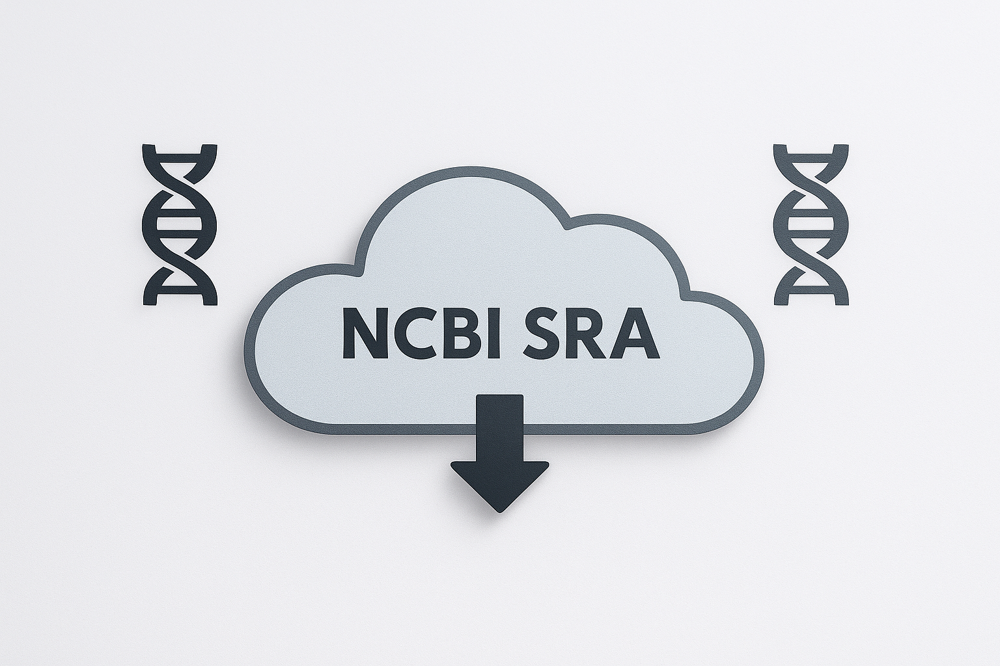
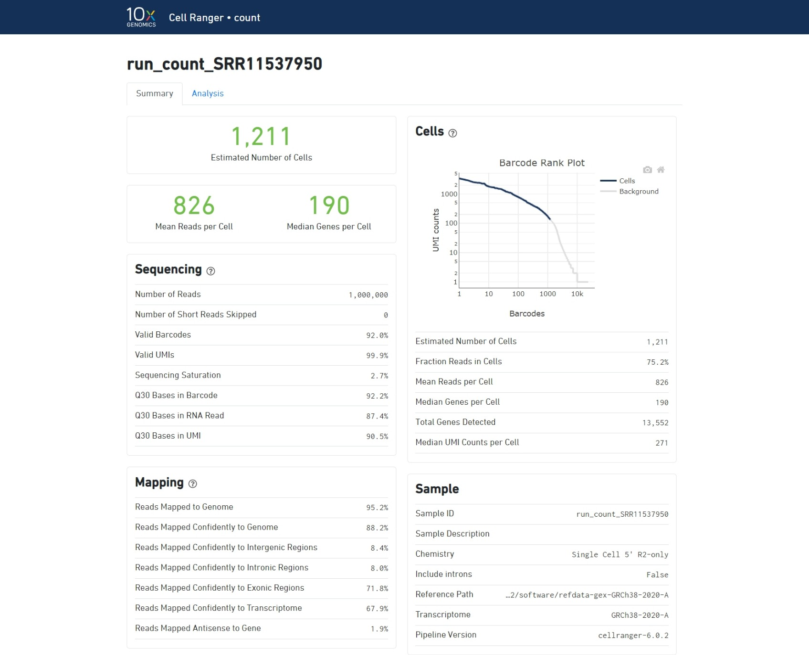
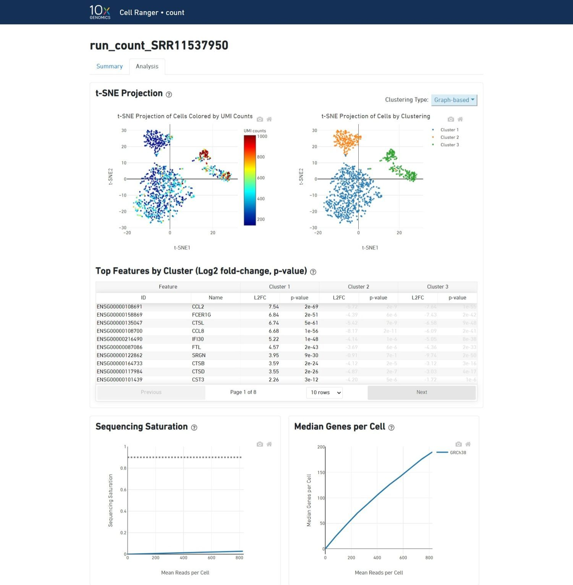

CellRanger 处理原始测序数据。
本笔记本介绍了 Linux 中的基本命令行操作，涵盖了在不同编程语言中广泛适用且只需少量调整的基础命令。这些基础技能将支持在计算生物学中的高效数据管理和分析。此外，我们将探讨使用 Cell Ranger 将原始测序读段处理为计数矩阵的关键步骤，并讨论其主要输出及其在单细胞转录组学中的作用。处理 scRNA-seq 数据是单细胞分析中的关键步骤。所选择的文库构建方法决定了 RNA 序列是从转录本末端捕获（如 10X Genomics、Drop-seq），还是从全长转录本捕获（如 Smart-seq），这将直接影响后续分析和生物学见解。
安装工具
SRAtoolkit

注意：Shell 命令
Google Colab/Jupyter Notebook 默认使用 Python 作为编程语言。 不过，它也允许我们使用其他语言，例如 Shell 脚本。
- 在 Google Colab 中，需要在代码前加上 "!"
- 在 Jupyter Notebook 中，可以在单元开头写入 %%bash 这个 magic cell 标记，然后再编写脚本。
这个标记会告诉 Google Colab：这里运行的是 Shell 代码。 如果你在自己的终端中使用这些命令，则不需要写 "!"
%%bash
# A hashtag is a comment, this parte of the code is not using. However serve to importante annotations.
# It is a good and common practice in code as a reminder and as a mechanism for reproduction.
# We recommend to always comment your codes and script
echo "Hello, world!"
在这个 Jupyter Notebook 中，你会看到不同的 Shell 命令。后面会逐步解释它们；这里先列出一小组最常见的命令。
%%bash
# make a folder.
# In programming, folder is called directory. We will use the name directory from here on.
# The name folder could be anything (e.g. folder1, folder_1, etc), try always to name directories that you remember what data are you saving on it
mkdir folder
%%bash
#list of files and directories
# In general, directories has a / in ending (e.g. /Documents/Files/scRNAseq_data/, here we have three directories
ls
%%bash
# A command could be follow for arguments. Arguments specify your main code. There are could be - or -- or positional.
# It's a importante thing to know about a software that you want to use.
ls -l
%%bash
# A command could be follow for arguments. Arguments specify your main code. There are could be - or -- or positional.
# It's a importante thing to know about a software that you want to use.
ls -l
%%bash
# The command cd is used to move into a directory or out of a directory
# If you want to move to another directory, you can use cd .. to move back forward or only cd to move forward
cd
%%bash
# The command mv is used to move your file to a specific directory
# You only need to specify the path to the directory you want to move your file
mv your_arquive local_to_move/
%%bash
# Also, mv could change names of directories or files. Try:
mv folder/ directory/
%%bash
# The command cat shows the entire contents of your file
cat
%%bash
# Also, you can concatenate two or more files using this command
cat file_1 file_2 > file_3
%%bash
# The command head shows the first 10 lines of your file
# Like a head of the "cat"
head your_file
%%bash
# The command tail shows the last 10 lines of your file
# Like a tail of the "cat"
tail
%%bash
# The command wget is used to download files
# You can put a link next to the command to download data (e.g. an specific dataset of a database, here is an example of a RNA-seq sample from SRA)
wget https://trace.ncbi.nlm.nih.gov/Traces/sra?run=SRR24765940
Installation
首先，需要下载 SRA Toolkit，以便使用 fastq-dump 工具下载 SRA 文件。
SRA Toolkit 是由 National Center for Biotechnology Information（NCBI）开发的一组工具，用于访问、下载和处理保存在 Sequence Read Archive（SRA）中的高通量数据。
fastq-dump 是 SRA Toolkit 中的一个工具，用于从 SRA accession 中提取 FASTQ 或 FASTA 格式的数据。FASTQ 是保存 DNA 和 RNA 测序数据的常用格式，包含序列 reads 及其质量信息。 fastq-dump 可以把 SRA 文件转换为 FASTQ 文件，从而方便在其他生物信息学工具中继续处理和分析。
%%bash
# The -q is for quit mode, to don't provide all the output of wget, just run silently.
# The --output-document is to specify the name of the file where the downloaded content should be saved.
wget -q --output-document sratoolkit.tar.gz https://ftp-trace.ncbi.nlm.nih.gov/sra/sdk/3.1.0/sratoolkit.3.1.0-ubuntu64.tar.gz
# .tar.gz is a file that has been first packaged with tar and then compressed with gzip.
# tar command is used to pack or unpack files on Unix/Linux systems. The name "tar" comes from "tape archive"
# -xzf: Indicates that tar should extract the contents of a gzip-compressed archive.
tar -xzf sratoolkit.tar.gz
%%bash
# list of archives
ls
Cell Ranger
什么是 Cell Ranger？
Cell Ranger 是 10x Genomics 开发的一套软件，用于分析由其 Chromium 平台生成的单细胞 RNA 测序（scRNA-seq）数据。 它可以把原始测序数据处理成具有生物学意义的结果，包括基因表达矩阵、细胞聚类以及其他下游分析输出。
说明
Cell Ranger 运行时需要超过 12 GB 内存，因此不能在 Colab 中运行。
下载下载 Cell Ranger。 如果链接已经失效，请更新 并下载相应的基因组参考文件。
%%bash
# -O: name of output
wget -O cellranger-10.0.0.tar.gz "https://cf.10xgenomics.com/releases/cell-exp/cellranger-10.0.0.tar.gz?Expires=1768912964&Key-Pair-Id=APKAI7S6A5RYOXBWRPDA&Signature=FMtot0YFitTbWXvsuYSTGPfxYIoqyGJwO1ejvl9r1HJP~NfxT34ffOIelVvXO-iHGLS62iMM3TUV1H7xsRTZ5tPVjH3pW-fEmVyiyKjxuG18vABH0bqXNiIj8QtmsUa-Cfnvotmk1vqk8cuSODH61jDxD-~hIDwW0Fwwtkru1GfZLLUKKxceVZuCQedlTULYQrxy1w4Lyx8E0duJvSjLWhhtw1ZJOOz~lsmdkiJXbkSDyILmMqafiqRxKWF1KGv6nt-bAscAXWgdAz8hA73mNcOVIOMbrHE863aK5qsTdKRiX99DNfIe8rV5VButQzHqvWWRUNNGAaSa6ZJXnJSteQ__"
%%bash
wget "https://cf.10xgenomics.com/supp/cell-exp/refdata-gex-GRCh38-2024-A.tar.gz"
你也可以从我们作为备份创建的 GitHub 仓库中下载 10.0.0 版本。不过首先需要删除代码前面的 # 符号来取消注释。若你已经从 10x 官网链接下载，则不需要运行这行代码。
%%bash
#wget https://github.com/integrativebioinformatics/scNotebooks/blob/main/scNotebooks-Resources/cellranger-10.0.0.tar.gz
重要：
如果你当前使用的 Cell Ranger 版本与这个 Jupyter Notebook 中使用的版本不同，需要在代码目录中更新相应路径，或从 GitHub 下载备份版本。
> 示例: cellranger-9.0.1 --> cellranger-10.0.0
安装
如果要分析 10x 提供资源中没有覆盖的生物，例如细菌、植物和病毒，就需要为 Cell Ranger 创建自定义 reference：
- cellranger-10.0.0/bin/cellranger 是软件路径
- mkref 命令用于创建自定义 reference package
- --genome: 创建输出文件目录
- --fasta: 指定参考基因组
- /genome/genome.fa: .fa 格式基因组文件路径
- --genes: 指定参考 GTF 文件
- /gtf/genome.annotation.gtf: 注释文件路径
下面是一个小示例，演示如何基于 10x 的人类参考基因组生成一个 chromosome 22 的 reference。
首先，我们安装 samtools，用它处理 FASTA 基因组文件并选择 chromosome 22。
%%bash
#apt-get update
apt-get install samtools -y
具体来说，samtools faidx 函数会提取 chromosome 22，然后我们把输出重定向到名为 GRCh38.CHR22.fa 的文件中。
%%bash
samtools faidx refdata-gex-GRCh38-2024-A/fasta/genome.fa chr22 > GRCh38.CHR22.fa
%%bash
gunzip -c refdata-gex-GRCh38-2024-A/genes/genes.gtf.gz | grep "chr22" | gzip > CHR22.genes.gtf.gz
# gunzip is for descompress archives gzip
# -c: indicates that the decompressed output should be sent to standard output (stdout) instead of creating a decompressed file on the filesystem.
# refdata-gex-GRCh38-2024-A/genes/genes.gtf: is the path to the compressed GTF file that contains the genomic annotations.
# grep "chr22": filters the lines that contain "chr22", extracting them
# gzip > CHR22.genes.gtf.gz: compresses the filtered lines and saves them to a new file called CHR22.genes.gtf.gz.
# | (pipe) is an operator that takes the output of one command and uses it as input to another command.
最后，我们已经具备生成新 reference 所需的文件，可以运行 Cell Ranger。
%%bash
cellranger-10.0.0/bin/cellranger mkref --genome=GRCh38-CHR22 --fasta=GRCh38.CHR22.fa --genes=CHR22.genes.gtf.gz
# cellranger-10.0.0/bin/cellranger: is the path to the Cell Ranger executable.
# --genome=GRCh38-CHR22: Name of the reference genome being created.
# --fasta=GRCh38.CHR22.fa: Path to the FASTA file containing the reference genome sequences.
# --genes=CHR22.genes.gtf.gz: Path to the GTF file containing the genomic annotations.
现在，我们已经获得了可以使用的新 reference。
不要运行！
-
cellranger-10.0.0/bin/cellranger 是软件路径。
- count 用于计数 messenger RNA（mRNA）分子
- --id= 是输出目录名称
- --fastqs 是待分析文件所在路径
- --sample 指定待分析样本文件
- --transcriptome 是 reference
%%bash
#DO NOT RUN!
#This \ break a line and continue the code in another line
cellranger-7.2.0/bin/cellranger count --id=run_count_SRR11537950 \
--fastqs=SRR11537950 --sample=SRR11537950 \
--transcriptome=refdata-gex-GRCh38-2020-A
#--localcores=2 --localmem=12

- Cell Ranger 软件会尽可能使用标准输出文件格式，以保持与常见分析工具的兼容性。 例如，带 barcode 的 BAM 文件可以在 IGV 等标准基因组浏览器中查看，用于确认比对质量和其他特征。
cellranger count 流程会输出一个名为 web_summary.html 的交互式 summary HTML 文件，其中包含 summary metrics 和自动化二级分析结果。下面查看这个文件。
https://support.10xgenomics.com/single-cell-gene-expression/software/pipelines/latest/output/summary
- 绿色文字表示关键指标处于预期范围。
- 红色/黄色文字表示错误或警告。
理解 summary 输出：
Barcode Rank Plot:
如果曲线出现陡降，通常说明与细胞相关的 barcode 和空 GEM 相关的 barcode 之间区分良好。

